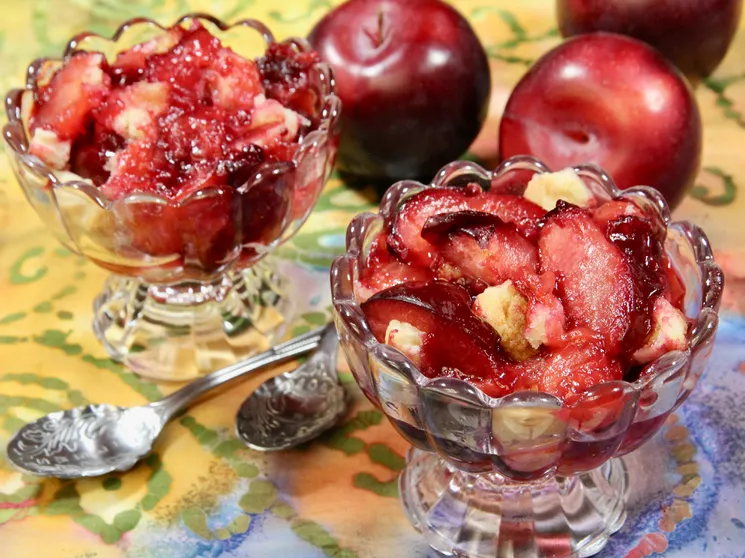

Plum Cobbler for Two

Description
This plum cobbler for two features juicy plums, simmered under a biscuit-like dough, perfect as a simple dessert.
Ingredients
For the fruit filling:
- 1 pound plums
- 1 teaspoon lemon juice
- 2 tablespoons white sugar
- 1 tablespoon cornstarch
- 1/2 teaspoon vanilla extract
For the topping:
- 1/4 cup all purpose flour
- 2 tablespoons white sugar
- 1/4 teaspoon baking powder
- 1 pinch salt
- 1 1/2 tablespoons butter
- 1 tablespoon boiling water
Steps
- Preheat the oven to 400 degrees F (200 degrees C). Coat a baking dish with cooking spray.
- Halve and pit the plums, then slice or quarter, depending on size. Place fruit in a single layer in a baking dish. Drizzle lemon juice over fruit, add 2 tablespoons sugar, cornstarch, and vanilla extract, and toss to coat; set aside.
- Add flour, 2 tablespoons sugar, baking powder, and salt to a bowl, and mix until well combined. Cut butter into small cubes, and mash into the flour mixture using a fork or pastry cutter until crumbly. Stir in boiling water to form a dough. Use your fingers or drop small spoonfuls of the dough on top of the plums.
- Bake until a toothpick inserted into cobbler dough comes out clean and top is lightly browned, 25 to 30 minutes.
Original recipe taken from: allrecipes.
Back to top